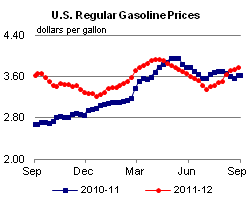
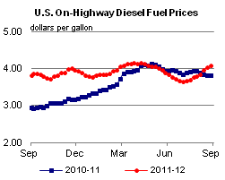
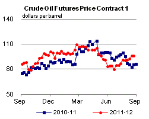
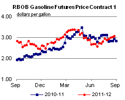
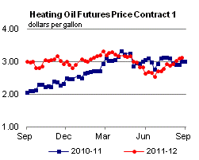
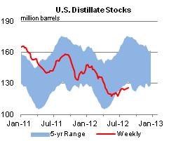
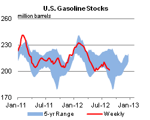
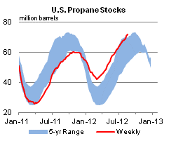

Released: August 29, 2012
Next Release: September 6, 2012
U.S. crude oil inventories and a tightening oil market
Global crude oil prices have increased significantly over the past two months. Since reaching a 2012 low of $89 per barrel on June 21, Brent spot prices have increased almost $25 (27 percent) to more than $113 per barrel on August 28, after reaching a high of almost $117 per barrel on August 16. Evidence of a tightening market can be seen in the increasing backwardation of the Brent futures curve and the related steady decline in crude oil inventories in the United States. While total U.S. crude oil inventories remain above their five-year average level, U.S. crude oil inventories outside of PADD2, which holds large inventories in transportation-constrained locations (notably Cushing, Oklahoma), are close to their seasonally typical level (Figure 1) despite today's inventory build.
{kind=link}
Globally, oil balances have been tightening over the course of the third quarter. According to the U.S. Energy Information Administration's (EIA) August Short- Term Energy Outlook (STEO), global liquid fuels supply is expected to average 88.73 million barrels per day (bbl/d) in the third quarter, a decrease of 70,000 bbl/d from the second quarter. Lower production from members of the Organization of the Petroleum Exporting Countries (OPEC) is driving the reduction in global supplies. Crude oil production from OPEC is expected to be 370,000 bbl/d lower in the third quarter than in the second. A major part of this decrease comes from lower Iranian production. Iran's crude oil production capacity is being eroded due to the country's inability to carry out investment projects necessary to offset the natural decline in production from existing wells, as well as the impact of lower Iranian crude oil exports due to recently enforced EU and U.S. sanctions. The decrease in OPEC crude oil production is expected to be offset somewhat by increases in both non-OPEC liquid fuels supply and OPEC non-crude liquids. At the same time, global consumption is expected to increase 1.70 million bbl/d in the third quarter. Higher global consumption is being driven by seasonal demand increases in Europe, the United States, and the Middle East.
This tightening of global supply-demand balances, along with market expectations of reduced crude oil loadings in September from the North Sea, has put upward pressure on the front end of the Brent futures market. After briefly slipping into contango in June, front-month Brent futures steadily increased their premium to third-month futures contracts during July and the first half of August. That spread reached almost $3 per barrel on August 15, the day before the expiry date for the September contract, before falling back closer to $1 per barrel as the October contract became the front month contract. The October contract is set to expire after the expected return of a significant portion of production in the North Sea that has been curtailed for maintenance.
Increasing backwardation has prompted participants in the seaborne physical crude market to shed inventories. Since reaching a record high of 387.3 million barrels on June 15, U.S. crude inventories have fallen by 22.8 million barrels (325,000 bbl/d). This draw is significantly larger than the 8.0-million-barrel draw typically seen over this period. The largest draws have been on the Gulf Coast, where inventories have decreased 8.1 million barrels since June 15, a period during which they are typically flat. Reduced import flows are supporting the inventory draws on the Gulf Coast. Weekly data indicate that for the week ending August 3, four-week average crude oil imports on the Gulf Coast reached their lowest point since 1996. This low can be partially attributed to depressed differentials for light sweet U.S. coastal crude grades, such as Louisiana Light Sweet, relative to comparable globally traded crudes. Increased tight oil production in the United States has backed out demand for imports into the Gulf Coast. Moreover, relatively favorable economics have incentivized high levels of runs at U.S. refineries this summer.
As of August 24, total U.S. crude oil inventories were 25.4 million barrels above their five-year average level. However, because of infrastructure capacity constraints to ship crude oil from PADD 2 to the Gulf Coast, a large portion of these inventories are accessible only to the limited number of refineries with connections to the Cushing hub. In contrast to the backwardated global oil markets, the high levels of crude inventories in Cushing and PADD 2 as a whole continue to keep the time structure of the NYMEX light sweet crude oil futures market, which has its trading hub at Cushing, in contango. Depressed prompt prices in the central United States have persisted since growing production volumes outpaced the capacity of pipelines to bring sufficient volumes of the landlocked crude to global markets, and the price structure of the NYMEX futures contract reinforces high inventory levels at the hub.
Gasoline and diesel fuel prices continue to climb
The U.S. average retail price of regular gasoline increased three cents this week to $3.78 per gallon, 15 cents per gallon higher than last year at this time. Prices increased in all regions of the Nation for the second time in the last three weeks. All regions except the Midwest saw a price increase of four cents. The Midwest average price is $3.78 per gallon, up two cents from last week. Prices are $3.75 per gallon, $3.58 per gallon, $3.58 per gallon, and $4.04 per gallon in the East Coast, Gulf Coast, Rocky Mountain, and West Coast regions, respectively.
The national average diesel fuel price increased six cents to $4.09 per gallon, 27 cents per gallon higher than last year at this time. Prices increased in all regions of the Nation for the fourth consecutive week, with the largest increase coming on the West Coast, where the price increased 10 cents for the second consecutive week to $4.35 per gallon. The Rocky Mountain price is $4.15 per gallon, up nine cents from last week. On the Gulf Coast, the average diesel price is up seven cents to $3.98 per gallon. The price on the East Coast increased seven cents to $4.07 per gallon. Rounding out the regions, the Midwest price had the smallest increase, at four cents, to $4.05 per gallon.
Propane stocks show a sizeable build
Total U.S. inventories of propane continued to build last week, adding 0.7 million barrels to end at 71.7 million barrels, 18.1 million barrels (34 percent) higher than a year ago. The Gulf Coast region added 0.4 million barrels last week, and East Coast inventories grew by 0.2 million barrels. Midwest and Rocky Mountain/West Coast regional stocks were each up 0.1 million barrels. Propylene non-fuel-use inventories represented 7.2 percent of total propane inventories.
Text from the previous editions of This Week In Petroleum is accessible through a link at the top right-hand corner of this page.
|  |  | ||||||
| Retail Data | Change From Last | Retail Data | Change From Last | ||||
| 08/27/12 | Week | Year | 08/27/12 | Week | Year | ||
| Gasoline | 3.776 | Diesel Fuel | 4.089 | ||||
|  |  | ||||||||||||||||||||||||||
|
 | ||||||||||||||||||||||||||
| *Note: Crude Oil Price in Dollars per Barrel. | |||||||||||||||||||||||||||
 |
 | ||||||
|  |  | ||||||
| Stocks Data | Change From Last | Stocks Data | Change From Last | ||||
| 08/24/12 | Week | Year | 08/24/12 | Week | Year | ||
| Crude Oil | 364.5 | Distillate | 126.1 | ||||
| Gasoline | 201.2 | Propane | 71.658 | ||||